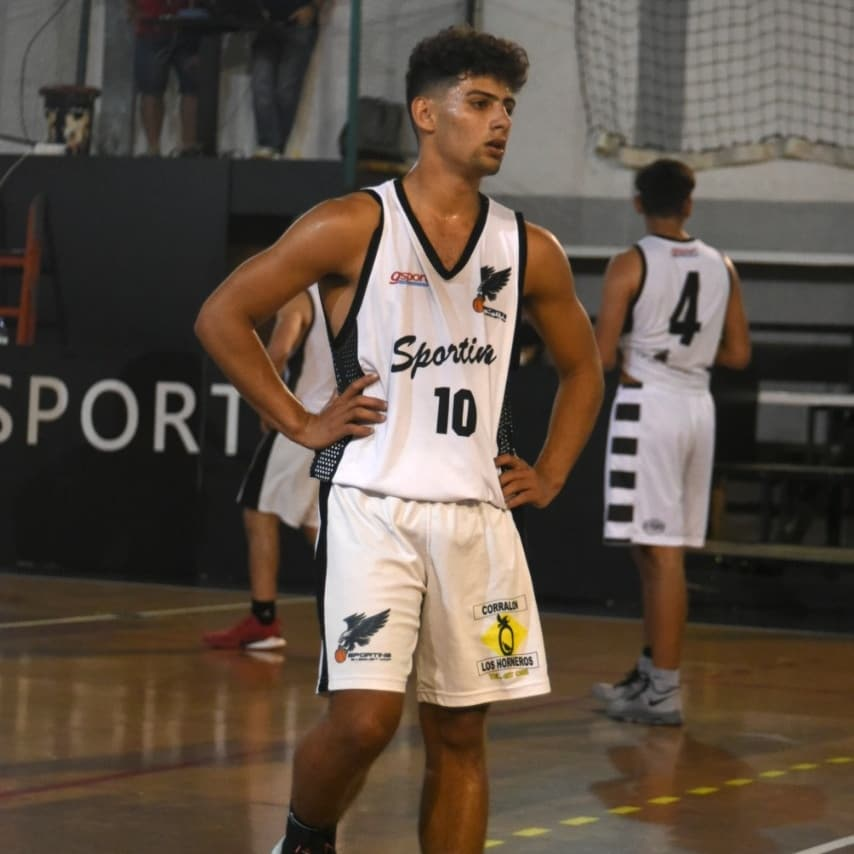
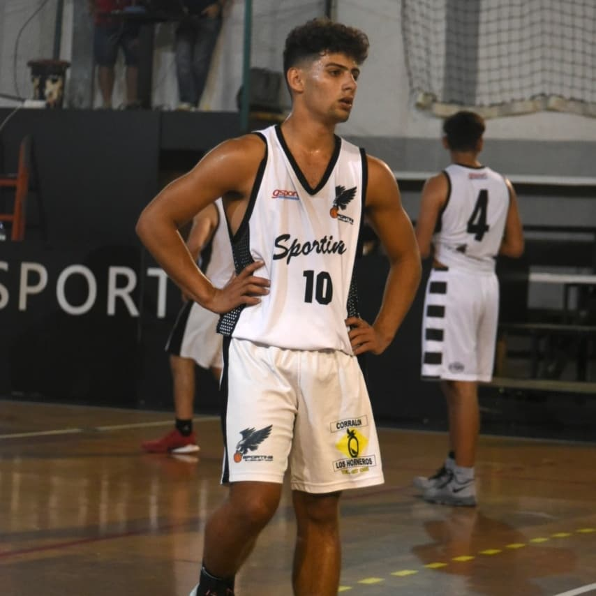
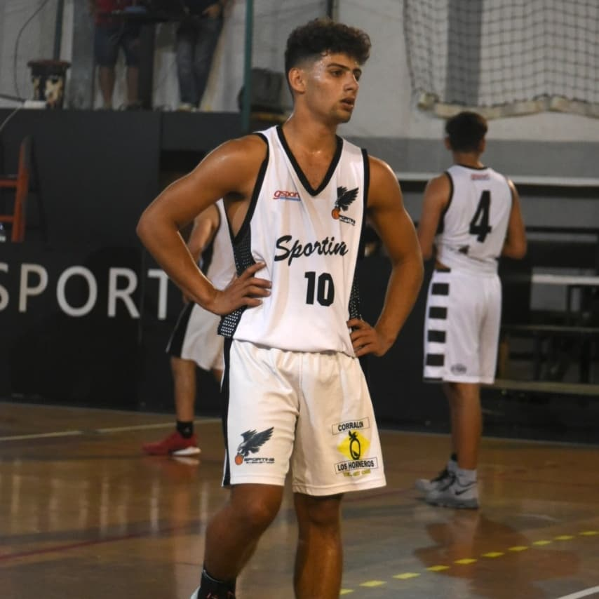
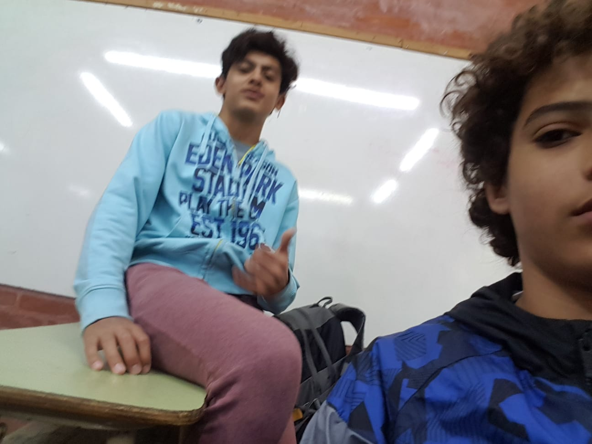

Buenas! Este es el anuario de Joaquín Basualdo de 6to 2da. Un pibe un poco boludo pero perseverancia y actitud. Como fanático del Trinche voy a enunciar una de sus "frases que me gustaría decir en la vida cotidiana": Con este anuario te voy a enseñar cuantos pares son tres botas. Me extraña araña que siendo mosca no me conozcas.

Joaquin Basualdo
18 de julio del 2004
Boca y Denver
Palermo, Campazzo y Del Potro
No Te Va a Gustar y los Red Hot Chilli Peppers
Cars 1 (kuchau)
Basukaxeneize
El pitón anónimo
Tecladista de los Cuadraditos de Jamón y Queso
Laburante de Trip y de Orfei
Para cerrar algunos de mi datos personales te dejo mi playlist de Spotify, muy aclamada por el público, y un temón de cancha para que te vayas cebando con Qatar
El primer año en el Illia fue duro y raro. La verdad que no fue fácil el inicio entre la adaptación a la exigencia escolar y a las nuevas amistades. Ya fin
Lo más inmediato de mi futuro viene con la finalización del colegio. Disfrutar las jodas de la promo, el viaje de vida, los viajes de acompas, la última copa CENI y muchas cosas más. Por el momento eso va de 10. Sin embargo, ya pienso en el año que viene y lo que sigue. Seguramente estudie ingeniería informática. El tema es dónde. ITBA, UTN, Tandil o en la UNMDP. Quien sabe. Lo seguro es que el piano seguirá presente, para quien dice algún día por crear mi música. El deporte también. En el caso de irme de la ciudad, buscaré algún club que juegue pre-federal o incluso federal, pero sino mi amado Sporting seguirá siendo mi lugar. Lo más importante de todo esto es la idea de hacerlo con mi compañera Sofi. Espero poder hacer todo esto con su apoyo, que siempre es un plus en el día a día. No soy el vende humo de Darín pero sueño y proyecto una vida a su lado.
Toda mi vida, fuera del colegio, tuve bastantes hobbies que disfrutaba y trataba de hacerlos lo mejor posible. El deporte fue la prioridad a lo largo de la vida. Pratiqué fútbol, tenis, rugby e incluso beach voley en el colegio. Sin embargo, el ganador de todos estos fue el básquet. Inicié a jugar en la canchita de la playa. Entre eso y el juego de la play, mi atracción hacia el deporte aumentó mucho, hasta el punto de querer jugar. Así fue como arranqué en Sporting, un club humilde.
Por su parte, la música durante la cuarentena, fue un acompañamiento, cosa que hacia falta en esas épocas. Te ayudaba a pasar un poquito mejor un momento tan anormal para nuestras vidas. Así fue como esto se combinó con el tiempo libre para querer ser autodidacta con la guitarra. Sin embargo, eso no funcionó. Un día me picó el bichito por arrancar piano. Recordaba ese tercer año de primeria en el IDRA, donde había tocado. Averiguando conseguí un profe para continuar ese aprendizaje. Una vez que arranqué no paré. Así transcurro mi primer año y unos pocos meses de clases. Les dejó un videito de algunas canciones que fui aprendiendo.